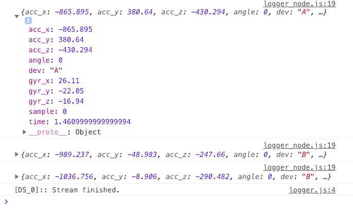
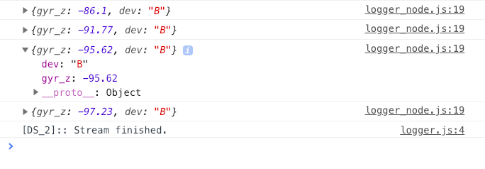

Getting started¶
Installation¶
The nFLOW libary is located in the Github repository at dist/nflow.js. This tutorial assumes you have managed to load that file into your browser and have access to the nflow global object.
Tutorial¶
Let’s dive in to how you can use nFLOW for real time signal analysis. We will be using motion analysis data which was pre-recorded using a commercial IMU (inertial measurement unit). The IMU was on the leg of a healthy walking patient. For prototyping puposes, nFLOW can simulate this data as if it is being received in real time. In this tutorial, we will create a pipeline for detecting when the patients foot contacts and leaves the ground.
Logging Simulated Motion Analysis Data¶
The first step is loading the sample data into a data_storage node, which will allow us to simulate the data packets arriving in real time.
//1. Get the sample data from nflow lib
let sample_walk = nflow.resources.sample_walk
//2. Create a data_storage node with session_id 'sample_walk' which will hold the data
let walk_simulator = new nflow.mods.data_storage("sample_walk")
walk_simulator.set_session(sample_walk)
At this point, we are almost ready to call walk_simulator.start_stream(), however, we must first connect the walk_simulator to another node for vizualizing its output. Lets try a logger node so we can inspect what is coming out (via the dev console):
//3. Create logger node
let logger_node = new nflow.mods.logger_node()
//4. Connect the data_storage node to the logger node
walk_simulator.connect(logger_node)
//5. Start streaming data and stop after 1 second
walk_simulator.start_stream()
setTimeout( function() { walk_simulator.stop_stream() } , 1000)
You should see the logger node outputting the results of the stream from the walk_simulator node, like this:
{kind=link}
Just with the code above, you have learned how to:
- Create nFLOW nodes using
new nflow.mods.MODULE_NAME() - Connect nFLOW nodes using
node_1.connect(node_2)
Analyzing and Altering Data Packets¶
Note that each data packet has several fields, including acceleration (acc) and gyroscope (gyr) in dimensions X, Y, and Z, as well as time in seconds and ‘dev’ or device ID. For now lets focus on the gyroscope Z data of device ‘B’, which gives us helpful information regarding walking. In order to isolate the aforementioned signal, we will use a transformer. A transformer is a type of nFLOW node which accepts data, applies a function to it, then relays it. Thus, we need a function which detects device ‘B’ and which accesses the gyr_z field of the packet:
// Create the transformer
let transformer = new nflow.mods.transformer(function(payload) {
if (packet.dev == 'B') {
return {gyr_z : payload.gyr_z, dev : payload.dev}
} else {
return nflow.SKIP_PAYLOAD
}
})
It is important to note that the return value nflow.SKIP_PAYLOAD results in the payload being dropped and not forwarded to any other nFLOW nodes.
The next step is to put this transformer node between the walk_simulator and the logger node by modifying our code so far like this:
//1. Get the sample data from nflow lib
let sample_walk = nflow.resources.sample_walk
//2. Create a data_storage node with session_id 'sample_walk' which will hold the data
let walk_simulator = new nflow.mods.data_storage("sample_walk")
walk_simulator.set_session(sample_walk)
//3. Create logger node
let logger_node = new nflow.mods.logger_node()
//4. Create our transformer
let transformer = new nflow.mods.transformer(function(payload) {
if (payload.dev == 'B') {
return {gyr_z : payload.gyr_z , dev : payload.dev }
} else {
return nflow.SKIP_PAYLOAD
}
})
//5. Connect the nodes together!
walk_simulator.connect(transformer).connect(logger_node)
//6. Start streaming data and stop after 1 second
walk_simulator.start_stream()
setTimeout( function() { walk_simulator.stop_stream() } , 1000)
You should see the output below. Note that only dev == ‘B’ and gyr_z make it through to the logger node.
{kind=link}
Two new concepts to keep in mind:
- Create a transformer node using
new nflow.mods.transformer(TRANSFORMER_FUNCTION) - Chain nFLOW nodes together using
node_1.connect(node_2).connect(node_3)
Vizualizing Data¶
Ok, it is about time we make a graph, right? nFLOW makes this extremely easy by leveraging the Bokeh Javascript API.
First, make sure there is an HTML DIV node <div id="nflow"></div> available on your web page for nFLOW to graph into. The ID of the div (“nflow”) will be used to identify the container for graphing.
Next, create an object_grapher_node by using the following command:
let grapher = new nflow.mods.ui_object_grapher({container:"nflow",exclude : ["dev"]})
The exclude argument tells the object grapher to ignore the field “dev” in the payload (which is a string thus we do not want to graph it!)
Can you guess how we will connect the incoming data to the grapher? See the completed code here:
//1. Get the sample data from nflow lib
let sample_walk = nflow.resources.sample_walk
//2. Create a data_storage node with session_id 'sample_walk' which will hold the data
let walk_simulator = new nflow.mods.data_storage("sample_walk")
walk_simulator.set_session(sample_walk)
//3. Create grapher
let grapher = new nflow.mods.ui_object_grapher( {container : "nflow" , exclude : ["dev"]} )
//4. Create our transformer
let transformer = new nflow.mods.transformer(function(payload) {
if (payload.dev == 'B') {
return {gyr_z : payload.gyr_z , dev : payload.dev }
} else {
return nflow.SKIP_PAYLOAD
}
})
//5. Connect the nodes together!
walk_simulator.connect(transformer).connect(grapher)
//6. Start streaming data and stop after 10 seconds
walk_simulator.start_stream()
setTimeout( function() { walk_simulator.stop_stream() } , 10000)
You should see a real time graph, like this: